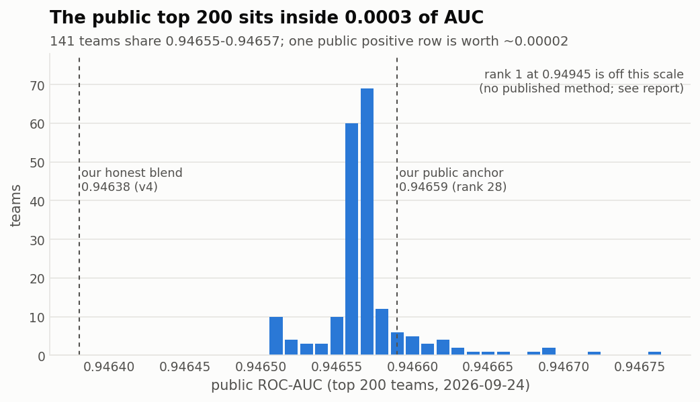
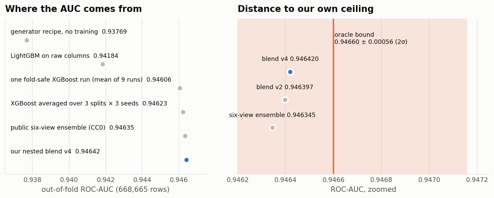
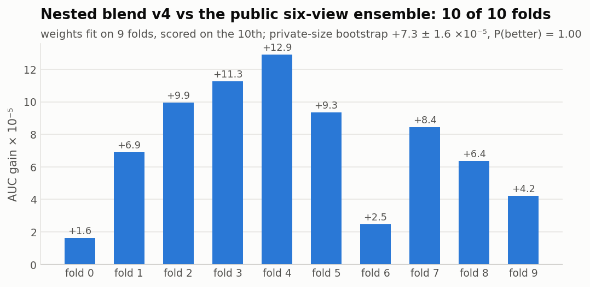
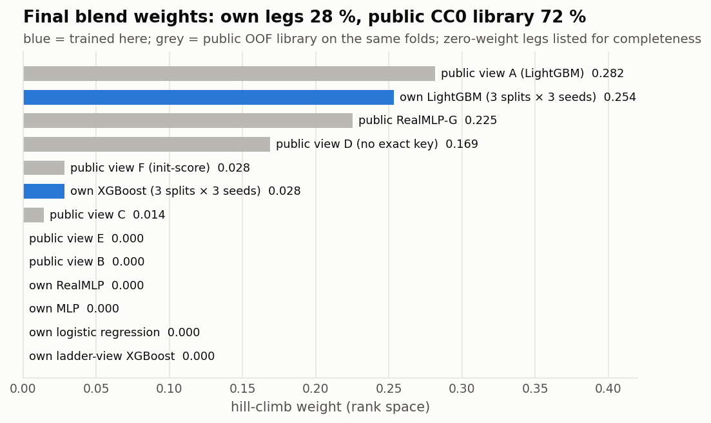
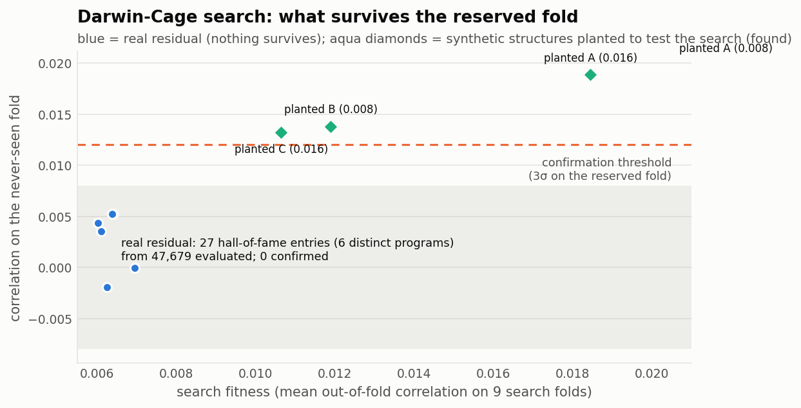
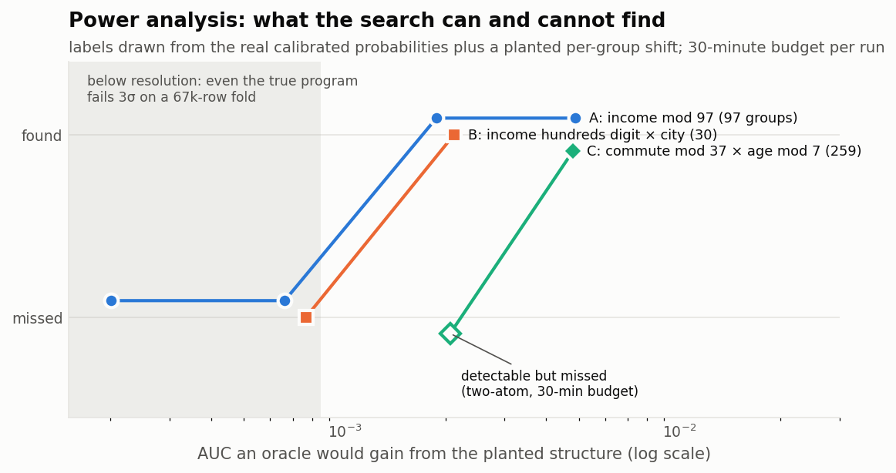
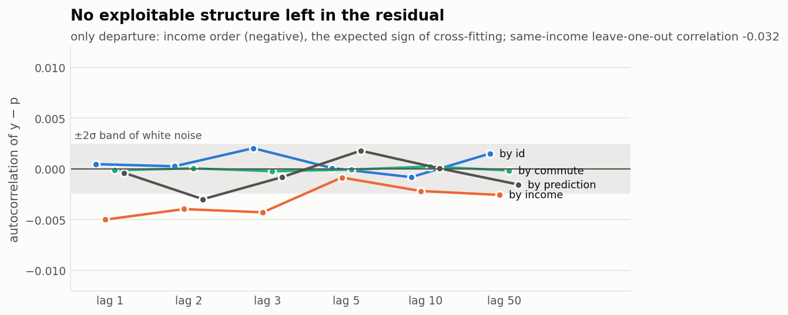

How high can an honest model go, and how do you know you have arrived?
A fully fold-safe ensembling pipeline, an evolutionary search that starts from noise and is rewarded only by what it finds in the residual, a power analysis of that search, and every number behind the claims. Open source, Apache-2.0.
Why every top score looks the same
The public top 200 is packed into 0.0003 of AUC. One positive row of the 57k-row public split is worth about 0.00002, so ranks 2 to 28 differ by roughly eight rows. The label is the generator's purchase recipe plus an independent random draw per row. The only extra signal is that the generator copied incomes from a 10,000-row original table, so an exact income value partially identifies an original row. Once a model target-encodes that identity, nothing learnable remains.


Method: every number out of fold
- One frozen split.
StratifiedKFold(10, shuffle=True, random_state=42)overtrain.csvin id order, the split of the public OOF libraries, so every out-of-fold vector stacks row for row. - Nested target encoding. Exact income, nearest original income, coarser income keys, exact commute and a few interactions are encoded inside each outer-train partition with an inner 5-fold cross-fit. A training row never sees its own label; the scored fold is never seen at all.
- Early stopping without the scored fold. A stratified 10 % slice of outer-train decides the number of trees.
- Averaging over outer splits. XGBoost and LightGBM each run on three outer splits × three seeds: 0.94606 per run becomes 0.94623 per family.
- Nested blending. Hill-climb weights are fit on 9 folds and scored on the 10th, for every fold, so the blend's own score is out of fold.
- Paired check at leaderboard size. Both candidates are scored on the same 229k-row subsamples, which is how the private leaderboard compares teams.


The Darwin-Cage experiment
Do not tell the search what to look for or how. Random programs are built from the thirteen raw columns (remainders, integer divisions, decimal digits, bit shifts, categorical values; up to four atoms joined into one key), then mutated and recombined. Each program is rewarded only by how well its groups predict the residual of the best blend, out of fold, on nine search folds. The tenth fold is never touched: a program is a discovery only if it clears 3σ of the null there.
47,679 programs, 0 confirmed
27 hall-of-fame entries (6 distinct programs) looked strong on the search folds; every one collapsed on the reserved fold. Best confirmation 0.0052, threshold 0.012.
Planted structures are found
Labels redrawn from the real probabilities plus a planted shift of known size. In 30 minutes the search finds single-atom structures worth ≈ 0.002 AUC and a two-atom one worth 0.005; it missed a two-atom structure worth 0.002. Below 0.0008 AUC nothing can be confirmed on a 67k-row fold.



What did not help, measured
| Idea | Result |
|---|---|
| Exact income × recipe-cell target encoding | −0.00012 / fold, removed |
| Original 10k rows as extra training data | public evidence 0/5 folds |
| Window target rates, stronger smoothing, deeper trees | neutral or negative |
| Income × city / car / home-charging encodings | −0.00001 to −0.00008 |
| Own MLP, RealMLP (48 epochs), logistic regression, ladder view | zero blend weight |
| Reservoir-computing leg (random tanh + complex phase, ridge readout) | +0.00001 (noise) |
| CatBoost with string identity columns | 0.9431 on fold 0, dropped |
Open doors
A null result is only as good as the space it searched. These directions lie outside it; each has a falsifiable acceptance test in the roadmap. Beat the numbers honestly and your result will be added with credit.
Partial pooling of the income identity
Empirical-Bayes or hierarchical shrinkage tied to the nearest original row, instead of fixed priors.
Readouts that are not group means
Score programs by the out-of-fold gain of a tiny model on the key and the logit, not by a correlation.
Relations between rows
Neighbourhood graphs over train + test and programs over neighbours' residuals.
Learned or LLM-guided proposals
Replace random mutation by a proposal model; measure evaluations to reach the planted structures.
Model the synthetic generator
Identify the generator family from the CC0 original and predict which original row a synthetic row came from.
A converged neural leg
RealMLP or TabM to convergence on the same nested encodings, about 20 GPU-hours.
Reproduce
git clone https://github.com/Agnuxo1/s6e9-honest-ceiling && cd s6e9-honest-ceiling
pip install -e ".[gbdt]"
kaggle competitions download -c playground-series-s6e9 -p data && unzip -o data/*.zip -d data
honest-ceiling train --data-dir data --model xgb --seeds 42 101 2026 --outer-seeds 42 7 13
honest-ceiling train --data-dir data --model lgbm --seeds 42 101 2026 --outer-seeds 42 7 13
honest-ceiling blend --data-dir data --library path/to/six-view-library
honest-ceiling darwin --data-dir data --scores work/blend_oof_nested.npy --minutes 60Cite
@software{angulo_2026_honest_ceiling,
author = {Angulo de Lafuente, Francisco},
title = {Honest Ceiling: fold-safe ensembling and a Darwin-Cage residual search on Kaggle Playground S6E9},
year = {2026}, url = {https://github.com/Agnuxo1/s6e9-honest-ceiling}, license = {Apache-2.0}}